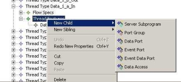
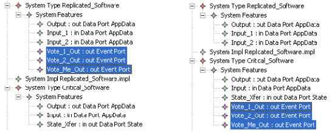
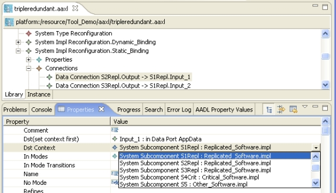

Previous
Next
Previous
Next 
| 7.3 Editing in the AADL Object Editor |
The AADL Object Editor supports syntax-sensitive editing of the AADL object model. You
can create new AADL model objects by selecting an element in the “Outline” view or in the
edit pane and right-clicking for a context menu. This menu will contain submenus for “New
child” and “New sibling”. The same menu entries are available in the menu bar under “Aadl
Editor”. These submenus are syntax-sensitive in that only syntactically legal objects can be
added to the AADL model. An example context menu is shown in Figure 18.

Figure 18: Example context menu in the AADL Object Editor.
The AADL Object Editor supports cut/copy and paste, drag and drop, as well as an edit
history with undo capability. Drag and drop can be used when organizing component classifier
declarations into packages. You create the package with appropriate public and private
sections. You then select one or more component types and component implementations and
drag then onto the public or private section of the package, i.e., a place for which these AADL
model objects are syntactically legal. Figure 19 shows three selected features before, on the
left, and after, on the right, a drag-and-drop operations is used to move them from system type
“Replicated_Software” to system type “Critical_Software.”

Figure 19: Before (left) and after (right) performing a drag-and-drop operation on the selected items in
the AADL Object Model editor.
AADL models can be further edited through the “Properties” view. This view provides access
to attributes and relations (reference associations) of AADL model objects. Attributes include
the “name” of the model object and the direction of the port of port features. Relations include
references to component classifiers for subcomponents and ports, references to ports in
connections, etc. Those references can be filled using a popup menu that limits the choices
based on the syntax and name scoping rules of AADL. In Figure 20 the “Dst Context” relation
of a data connection is being edited, and the editor only allows subcomponents of the
containing component to be used.

Figure 20: Editing a relation reference of a data connection using the "Properties" view.